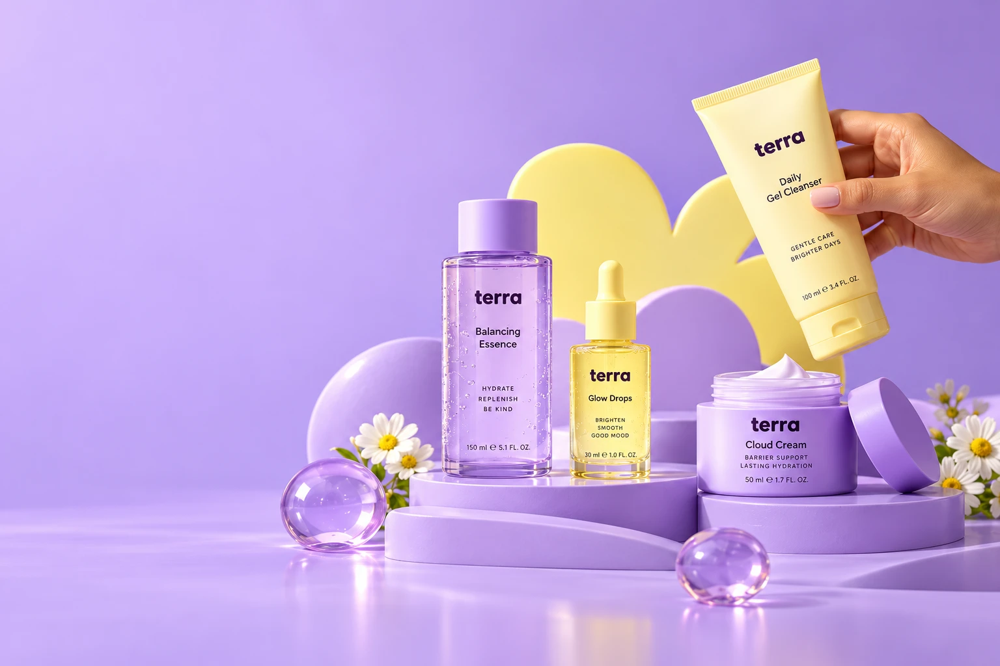
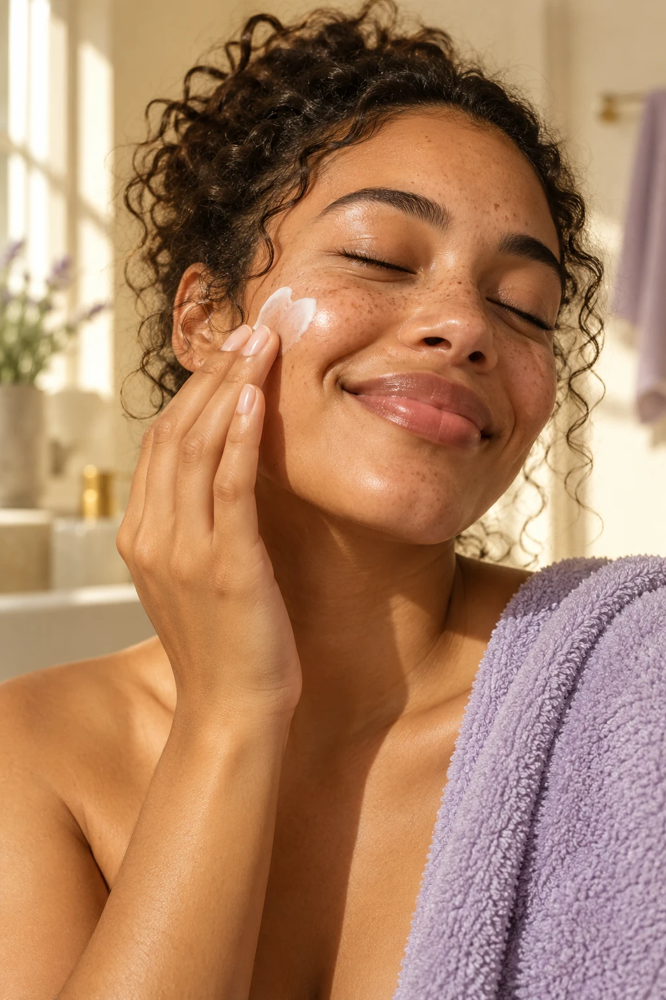

Daily Gel Cleanser
$20A fresh start, morning and night.
Start fresh
A gentle clean for brighter days.
$20Hydrate, replenish, be kind.
$28Brighter skin. Happier you.
$32For your skin. For your self.
We believe taking care of your skin should feel like taking a little time for you. A few thoughtful essentials. A moment to slow down. A softer start to your day.
Find your feel-good ritualLess overthinking.
More everyday essentials.
A fresh start, morning and night.
Start freshA little pause. A splash of care.
Make a little momentThe bright side of your routine.
Find your glow
A moment, just for you.No perfect-skin promises. No complicated rules. Just a little everyday care, and room to be yourself.
Make time for youYour bathroom-shelf essentials,
without the twelve-step overwhelm.
Start with Daily Gel Cleanser and a little warm water. Rinse. Take a breath.
Gently pat Balancing Essence onto clean skin. Let this be your pause.
Press in a few Glow Drops, then follow with your favourite moisturiser. Hello, you.
In the morning, finish your routine with sunscreen. Always follow the directions on your products.
A little care goes a long way.